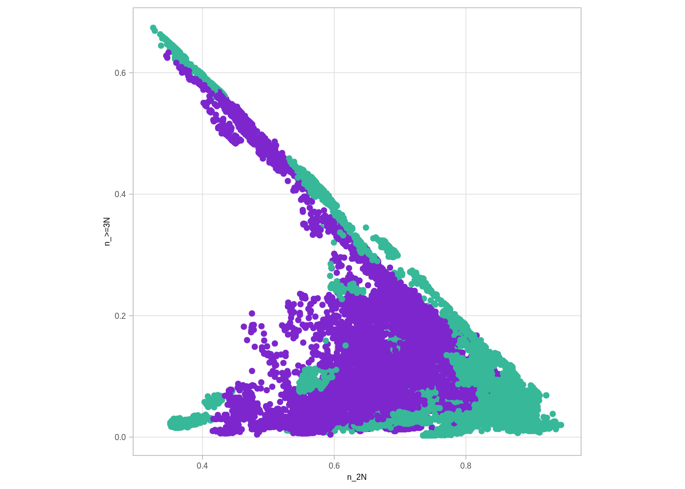
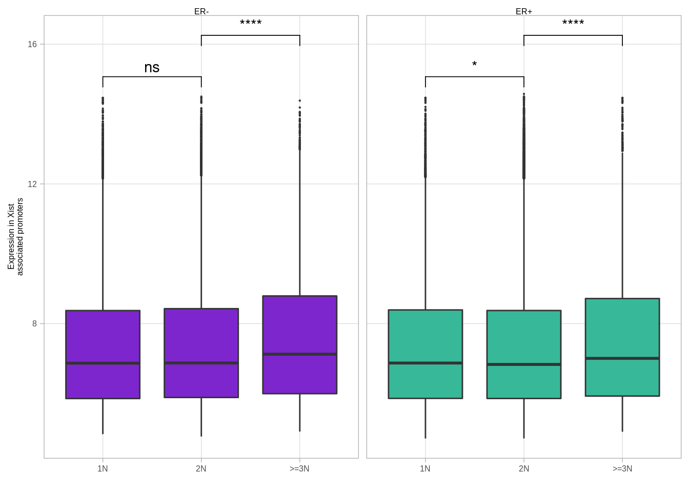

12 Finding specific dosage compensation examples
autosome_cands_3n <- get_autosome_dosage_comp_cands("3N")
head(autosome_cands_3n)## # A tibble: 6 x 17
## chrom start end ER 1N 2N >=3N n_>=3N n_1N n_2N
## 1 chr1 762469 763020 ER- 0.008341878 0.007857689 0.007852706 15 60 210
## 2 chr1 762469 763020 ER+ 0.008089050 0.008125402 0.006506879 12 211 816
## 3 chr1 762676 763227 ER- 0.021358769 0.026941446 0.028412915 16 67 220
## 4 chr1 762676 763227 ER+ 0.070967669 0.042346185 0.028590166 16 228 846
## 5 chr1 762851 763402 ER- 0.022340914 0.029069381 0.029766663 16 67 220
## 6 chr1 762851 763402 ER+ 0.078736553 0.047128295 0.032413643 15 228 845
## expr_>=3N expr_1N expr_2N n_expr_>=3N n_expr_1N n_expr_2N name
## 1 NA NA NA NA NA NA LINC01128
## 2 NA NA NA NA NA NA LINC01128
## 3 NA NA NA NA NA NA <NA>
## 4 NA NA NA NA NA NA <NA>
## 5 NA NA NA NA NA NA LINC00115
## 6 NA NA NA NA NA NA LINC00115thresh <- 0.1
dosage_cands_gain_3n <- autosome_cands_3n %>%
filter(`>=3N` >= (`2N` + thresh) ) %>%
filter(`n_>=3N` >= 5, `n_2N` >= 5) %>% #, !is.na(name)) %>%
select(chrom, start, end, name, ER, `>=3N`, `2N`, `n_>=3N`, n_2N, `expr_>=3N`, `expr_2N`, `n_expr_>=3N`, `n_expr_2N`) %>%
arrange(-`>=3N`, ER, name)
dosage_cands_gain_3n %>% count(ER)## # A tibble: 2 x 2
## ER n
## 1 ER- 197
## 2 ER+ 279autosome_cands_4n <- get_autosome_dosage_comp_cands("4N")
head(autosome_cands_4n)## # A tibble: 6 x 21
## chrom start end ER 1N 2N 3N >=4N
## 1 chr1 762469 763020 ER- 0.008341878 0.007857689 0.007852706 NA
## 2 chr1 762469 763020 ER+ 0.008089050 0.008125402 0.006234499 0.007324019
## 3 chr1 762676 763227 ER- 0.021358769 0.026941446 0.028412915 NA
## 4 chr1 762676 763227 ER+ 0.070967669 0.042346185 0.032404898 0.012059659
## 5 chr1 762851 763402 ER- 0.022340914 0.029069381 0.029766663 NA
## 6 chr1 762851 763402 ER+ 0.078736553 0.047128295 0.037778446 0.010954431
## n_>=4N n_1N n_2N n_3N expr_>=4N expr_1N expr_2N expr_3N n_expr_>=4N n_expr_1N
## 1 NA 60 210 15 NA NA NA NA NA NA
## 2 3 211 816 9 NA NA NA NA NA NA
## 3 NA 67 220 16 NA NA NA NA NA NA
## 4 3 228 846 13 NA NA NA NA NA NA
## 5 NA 67 220 16 NA NA NA NA NA NA
## 6 3 228 845 12 NA NA NA NA NA NA
## n_expr_2N n_expr_3N name
## 1 NA NA LINC01128
## 2 NA NA LINC01128
## 3 NA NA <NA>
## 4 NA NA <NA>
## 5 NA NA LINC00115
## 6 NA NA LINC00115thresh <- 0.1
dosage_cands_gain_4n <- autosome_cands_4n %>%
filter(`>=4N` >= (`2N` + thresh) ) %>%
filter(`n_>=4N` >= 5, `n_2N` >= 5) %>% #, !is.na(name)) %>%
select(chrom, start, end, name, ER, `>=4N`, `2N`, `n_>=4N`, n_2N, `expr_>=4N`, `expr_2N`, `n_expr_>=4N`, `n_expr_2N`) %>%
arrange(-`>=4N`, ER, name)
dosage_cands_gain_4n %>% count(ER)## # A tibble: 2 x 2
## ER n
## 1 ER- 261
## 2 ER+ 522dosage_cands_loss <- autosome_cna_meth_expr %>%
filter(`1N` <= (`2N` - thresh) ) %>%
filter(`n_1N` >= 5, `n_2N` >= 5) %>%
select(chrom, start, end, name, ER, `1N`, `2N`, `n_1N`, n_2N, `expr_1N`, `expr_2N`, `n_expr_1N`, `n_expr_2N`) %>%
arrange(-`n_1N`, ER, name)
dosage_cands_loss %>% count(ER)## ER n
## 1 ER- 23
## 2 ER+ 25df <- get_autosome_meth_cna()Validating that we have enough samples for each locus:
auto_cna <- get_autosome_cna() %>% inner_join(get_autosome_loci_meth())## Joining, by = c("chrom", "start", "end")## Joining, by = c("chrom", "start", "end", "samp")num_cna_meth <- auto_cna %>% filter(!is.na(meth)) %>% count(chrom, start, end, ER, cna_grp) %>% mutate(cna_grp = paste0("n_", cna_grp)) %>% spread(cna_grp, n)num_cna_meth %>% gather('type', 'num', -(chrom:ER)) %>% group_by(chrom, start, end, ER) %>% mutate(p = num / sum(num)) %>% select(-num) %>% spread(type, p) %>% ggplot(aes(x=`n_1N`, y=`n_2N`, color=ER)) + geom_point() + scale_color_manual(values=annot_colors$ER1, guide = FALSE) + theme(aspect.ratio=1)## Warning: Removed 5 rows containing missing values (geom_point).## Warning: It is deprecated to specify `guide = FALSE` to remove a guide. Please
## use `guide = "none"` instead.
num_cna_meth %>% gather('type', 'num', -(chrom:ER)) %>% group_by(chrom, start, end, ER) %>% mutate(p = num / sum(num)) %>% select(-num) %>% spread(type, p) %>% ggplot(aes(x=`n_2N`, y=`n_>=3N`, color=ER)) + geom_point() + scale_color_manual(values=annot_colors$ER1, guide = FALSE) + theme(aspect.ratio=1)## Warning: Removed 5 rows containing missing values (geom_point).
## Warning: It is deprecated to specify `guide = FALSE` to remove a guide. Please
## use `guide = "none"` instead.
df <- df %>% left_join(num_cna_meth)## Joining, by = c("chrom", "start", "end", "ER")df_expr <- get_autosome_expr_cna() %>% gather("cna", "expr", -(chrom:ER)) %>% mutate(cna = paste0("expr_", cna)) %>% spread(cna, expr)df <- df %>% left_join(df_expr)## Joining, by = c("chrom", "start", "end", "ER")num_cna_expr <- get_autosome_cna() %>% inner_join(get_autosome_loci_expr()) %>% filter(!is.na(expr)) %>% count(chrom, start, end, ER, cna_grp) %>% mutate(cna_grp = paste0("n_expr_", cna_grp)) %>% spread(cna_grp, n)## Joining, by = c("chrom", "start", "end")## Joining, by = c("chrom", "start", "end", "samp")df <- df %>% left_join(num_cna_expr)## Joining, by = c("chrom", "start", "end", "ER")df <- df %>% left_join(get_gene_expression_mat() %>% select(chrom:end, name) %>% mutate(start = start + 1, end = end + 1))## Joining, by = c("chrom", "start", "end")fwrite(df, here("data/autosome_cna_meth_expr.tsv"), sep="\t")thresh <- 0.1options(repr.plot.width = 4, repr.plot.height = 4)
df %>% ggplot(aes(x = `2N`, y = `>=3N`, color = ER)) +geom_point(size=0.2) + geom_abline(color = "black", linetype = "dashed") + scale_color_manual(values = annot_colors$ER1, guide = FALSE) + theme(aspect.ratio = 1) + geom_line(data = tibble(`2N` = seq(0,1,0.001), `>=3N`= `2N` - thresh), color="red", linetype="dashed") + geom_line(data = tibble(`2N` = seq(0,1,0.001), `>=3N`= `2N` + thresh), color="red", linetype = "dashed") + xlim(0,1) + ylim(0,1)## Warning: Removed 100 row(s) containing missing values (geom_path).
## Warning: Removed 100 row(s) containing missing values (geom_path).## Warning: It is deprecated to specify `guide = FALSE` to remove a guide. Please
## use `guide = "none"` instead.
df %>% filter(`>=3N` >= (`2N` + thresh) ) %>% select(chrom, start, end, ER, `>=3N`, `2N`, `n_>=3N`, n_2N, `expr_>=3N`, `expr_2N`, `n_expr_>=3N`, `n_expr_2N`, name) %>% filter(`n_>=3N` >= 5, `n_2N` >= 5, !is.na(name)) %>% arrange(-`n_>=3N`, ER, name) %>% ggplot(aes(x=(`expr_>=3N` - `expr_2N`))) + geom_density() + xlim(-0.5, 1)
df %>% filter(`>=3N` >= (`2N` + thresh) ) %>% select(chrom, start, end, ER, `>=3N`, `2N`, `n_>=3N`, n_2N, `expr_>=3N`, `expr_2N`, `n_expr_>=3N`, `n_expr_2N`, name) %>% filter(`n_>=3N` >= 5, `n_2N` >= 5, !is.na(name)) %>% arrange(-`n_>=3N`, ER, name)## # A tibble: 0 x 13
## [1] chrom start end ER >=3N 2N
## [7] n_>=3N n_2N expr_>=3N expr_2N n_expr_>=3N n_expr_2N
## [13] name
## <0 rows> (or 0-length row.names)df %>% filter(`>=3N` <= (`2N` - thresh) ) %>% select(chrom, start, end, ER, `>=3N`, `2N`, `n_>=3N`, n_2N, `expr_>=3N`, `expr_2N`, `n_expr_>=3N`, `n_expr_2N`, name) %>% filter(`n_>=3N` >= 5, `n_2N` >= 5, !is.na(name))## # A tibble: 0 x 13
## [1] chrom start end ER >=3N 2N
## [7] n_>=3N n_2N expr_>=3N expr_2N n_expr_>=3N n_expr_2N
## [13] name
## <0 rows> (or 0-length row.names)dosage_cands <- df %>% filter(`>=3N` >= (`2N` + thresh) ) %>% select(chrom, start, end, ER, `>=3N`, `2N`, `n_>=3N`, n_2N, `expr_>=3N`, `expr_2N`, `n_expr_>=3N`, `n_expr_2N`, name) %>% filter(`n_>=3N` >= 5, `n_2N` >= 5, !is.na(name)) %>% arrange(-`n_>=3N`, ER, name)dosage_cands_mean_expr <- dosage_cands %>% select(chrom, start, end, ER) %>% inner_join(get_gene_expression_mat() %>% select(-name3.chr) %>% mutate(start = start + 1, end = end + 1)) %>% gather("samp", "expr", -(chrom:name)) %>% left_join(samp_data %>% select(samp, ER1)) %>% filter(ER == ER1) %>% group_by(chrom, start, end, name, ER) %>% summarise(mean_expr = mean(expr, na.rm=TRUE)) %>% ungroup()## Joining, by = c("chrom", "start", "end")## Joining, by = "samp"all_mean_expr <- get_gene_expression_mat() %>% select(-name3.chr) %>% mutate(start = start + 1, end = end + 1) %>% gather("samp", "expr", -(chrom:name)) %>% left_join(samp_data %>% select(samp, ER1)) %>% group_by(chrom, start, end, name, ER1) %>% summarise(mean_expr = mean(expr, na.rm=TRUE)) %>% ungroup()## Joining, by = "samp"dosage_cands_mean_expr %>% mutate(type = "dosage") %>% bind_rows(all_mean_expr %>% mutate(type = "all")) %>% ggplot(aes(x=mean_expr, color=type)) + geom_density()## Warning: Removed 34216 rows containing non-finite values (stat_density).
get_xist_cna() %>%
left_join(get_xist_loci_expr()) %>%
group_by(cna_grp, samp, ER, chrom, start, end) %>%
summarise(expr = mean(expr, na.rm = TRUE)) %>%
ggplot(aes(x = cna_grp, y = expr, fill = ER, group = cna_grp)) +
geom_boxplot(outlier.size = 0.1) +
scale_fill_manual(values = annot_colors$ER1, guide = FALSE) +
xlab("") +
ylab("Expression in Xist\nassociated promoters") +
facet_grid(. ~ ER) +
ggpubr::stat_compare_means(label = "p.signif", comparisons = list(c("1N", "2N"), c("2N", ">=3N")))## Joining, by = "samp"## Joining, by = c("chrom", "start", "end")## Joining, by = c("chrom", "start", "end", "samp")## Warning: Removed 569263 rows containing non-finite values (stat_boxplot).## Warning: Removed 569263 rows containing non-finite values (stat_signif).## Warning: It is deprecated to specify `guide = FALSE` to remove a guide. Please
## use `guide = "none"` instead.
gc()## used (Mb) gc trigger (Mb) max used (Mb)
## Ncells 5486807 293.1 38886436 2076.8 60760054 3245.0
## Vcells 1399051102 10674.0 2838607215 21656.9 2825762492 21558.9